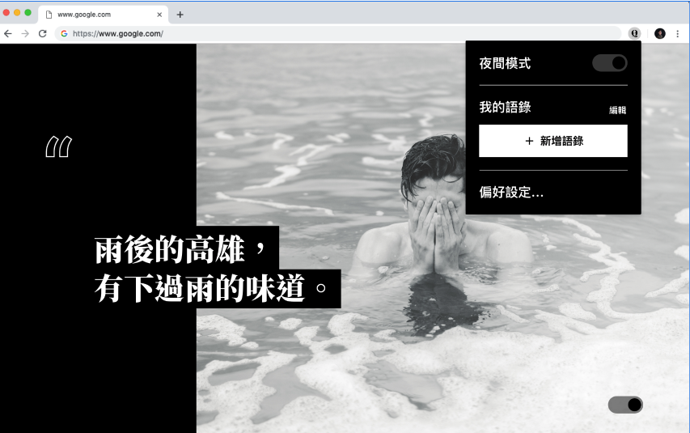
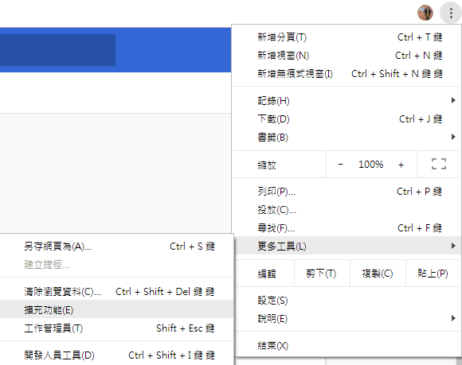
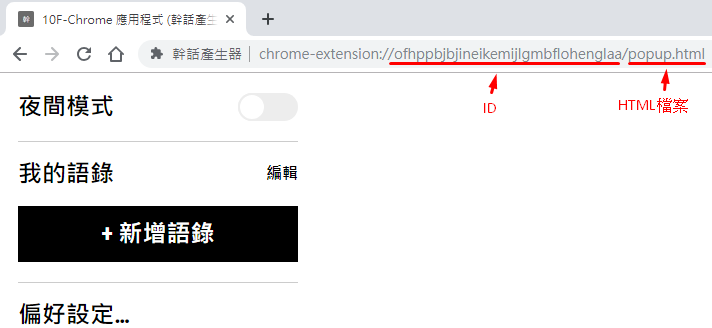

JS地下城：10F-Chrome 應用程式(幹話產生器)

規則
- 【特定技術】請開發 Chrome extension，不需上架，投稿時請提供安裝檔放在雲端，以供 GM 下載測試。
- 【特定技術】打開 Chrome 新頁(tab)時，會隨機顯示你自己新增的語錄，或者是幹話。
- 【特定技術】可切換夜間/日間模式
- 【特定技術】新增語錄時，有兩種方式新增，一種是在頁面裡新增，另一種是點選瀏覽器右上角 icon 來新增
- 【特定技術】背景插圖固定即可，
斷斷續續寫好久 終於寫完了 從來沒有想過會做瀏覽器的應用程式 剛好趁著這次機會 就來試試看囉 還是要動手做過才會知道
先吐口水一下
這次改用 webpak + vue 來處理
原本是試了 vue-cli 來 處理 但 vue-cli 有太多的預設值在裡面
直接寫 vue 會發生
1 | vue CSP |
CSP (Content Security Policy) 内容安全策略
算是小小雷之一
需要封裝後才能正常顯示
在封裝發佈過程中也搞蠻久的 主要也是對 webpack 不熟的原因 QQ
檢示擴充功能頁面


1 | id = ID：ofhppbjbjineikemijlgmbflohenglaa |
chrome 預設頁面
| bookmarks | history | newtab |
|---|---|---|
| 書籤管理器 | 歷史記錄 | 新預增分頁 |
| chrome://bookmarks | chrome://history | chrome://newtab |
Override 替代頁
MDN-chrome_url_overrides
Chrome Extension 的架構
manifest.json: 很重要的一支檔案，用來定義整個 Chrome Extension 的描述，權限等等各種資訊。icon.png: 瀏覽器右上角的 icon
開發頁面
基本上會有以下幾種頁面可供選擇background.js：背景頁面
popup.html: 擊點瀏覽器右上角 icon 所彈出的小視窗popup.js: popup.html 執行的互動事件(腳本)
newtab.html：開新分頁newtab.js：newtab.html 執行的互動事件(腳本)
卡了許多雷
其中是又是以 newtab 與 popup 同步的問題處理最久，
後來証明其實是自己想太多 簡單的在 vue 上 宣告好 就可以了
1 | // 獲取chrome 瀏覽器資料 |
基本上 可以正確取得 chrome.storage 裡的東西後
再將要更動的資料以 set 方式傳入
再去進行 onChanged 監聽 即可達到 popup 與 newtab 同步
實作部份
個人小記錄 供參
隨機顯示語錄
開新頁面後會隨機產生語錄
在撰寫的過程中，發現 只要新增或刪除資料後，原本的語錄就會跳掉
為了固定一開始的語錄 另外做了些小處理
新增
最新一筆會放在整個陣列的第一筆裡
所以 當新增一筆資料的時後，原本隨機的數值就會+1
刪除
若是刪除的資料比隨機產生的資料還新 數值就會 -1，否則不變
vue filters 處理語錄斷行
1 | <p @click="isPageEdit()" v-if="!pagequote">{{ quote[random].text | txtformat }}</p> |